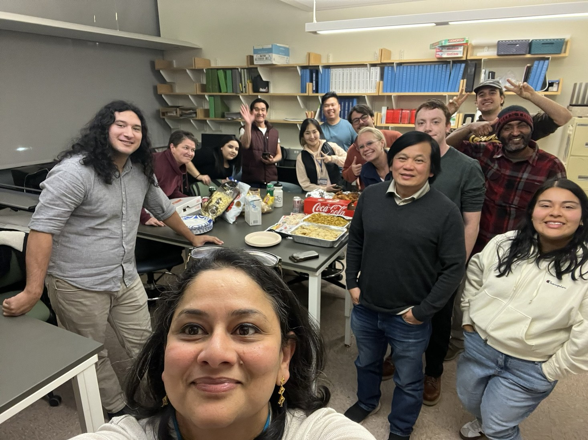

UPCD 620: Analytical Methods
Qualitative and quantitative methods for planning, including statistics, regression, census data, interviews, focus groups, demographic analysis, economic analysis, environmental analysis, and housing analysis.
Teaching
My courses prepare students to collect and interpret data, engage communities, evaluate policy, and produce professional planning deliverables for real clients and public audiences. Full syllabi are not posted here; each course page summarizes learning goals and selected assignments.
Qualitative and quantitative methods for planning, including statistics, regression, census data, interviews, focus groups, demographic analysis, economic analysis, environmental analysis, and housing analysis.
Housing policy, capital investment, affordable housing development, market failures, place-based and people-based policy approaches, and community development finance.
Professional norms, legal standards, social justice, ethical decision-making, and the responsibilities of planners in public-facing practice.
Two-semester applied studios with public agencies, nonprofits, and community partners. Students produce professional reports, maps, public presentations, and implementation strategies.

Mentoring and student work
My teaching integrates project-based learning, applied analysis, and community-engaged research. Students learn to produce work that can be shared with partners, policymakers, and the public.